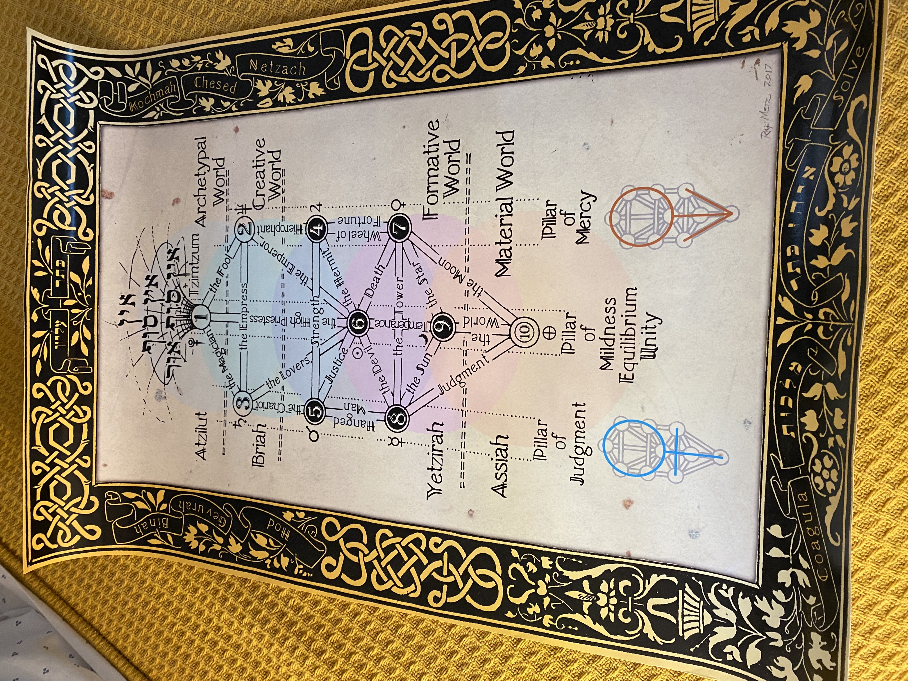
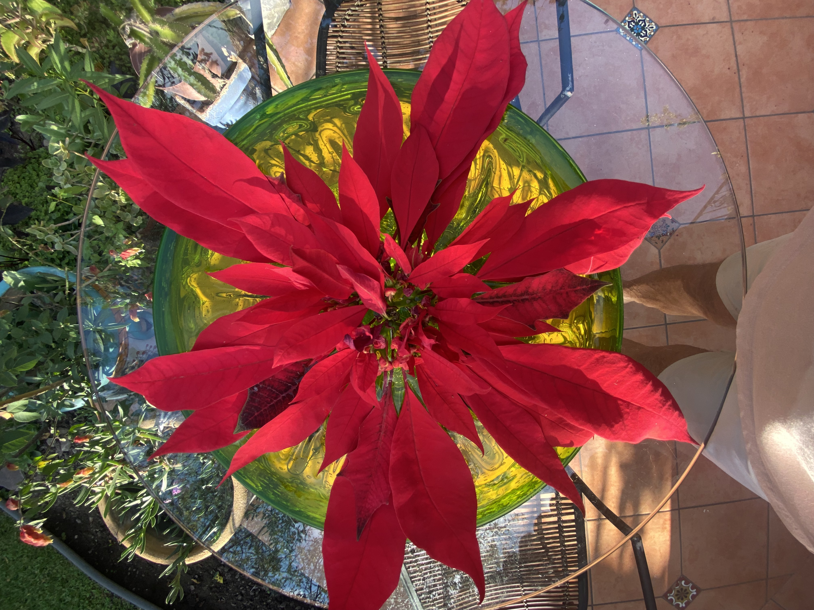
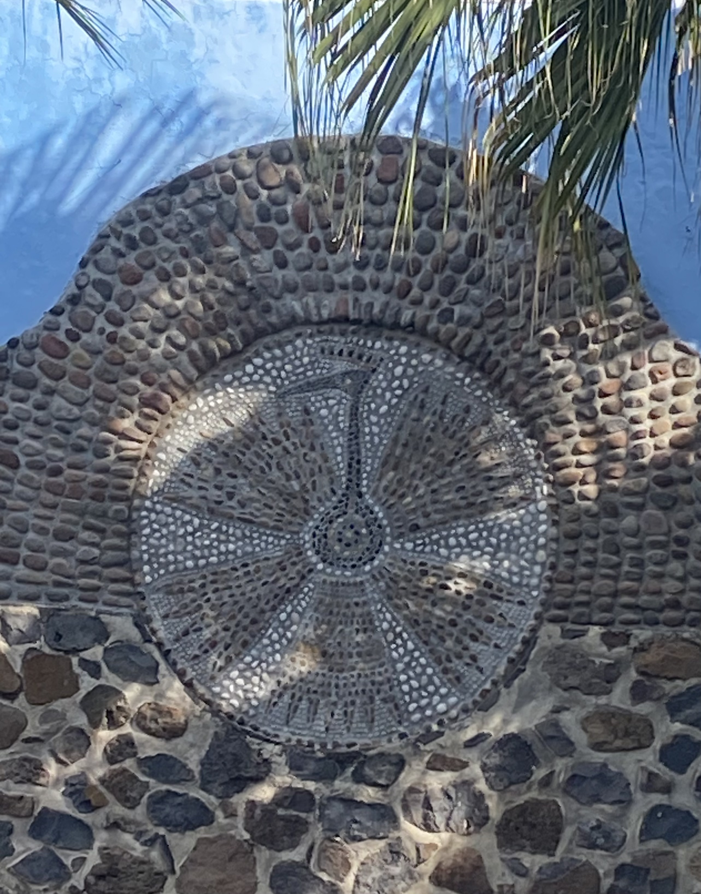
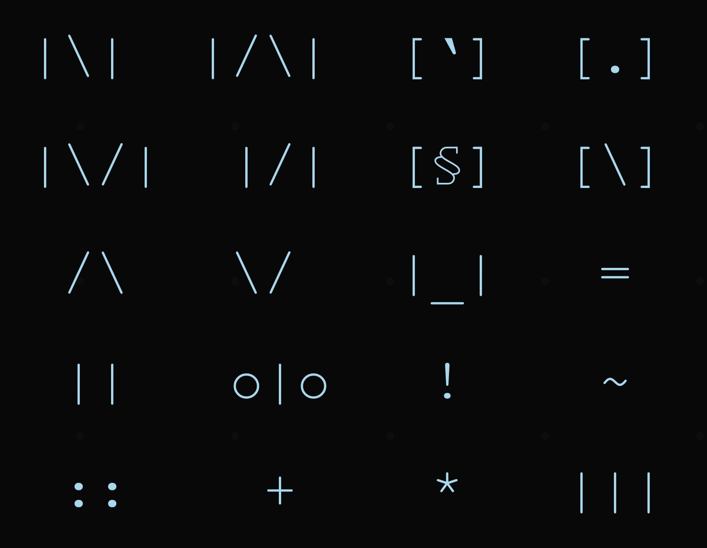

The Burning HOT Cherubim Stone on Malkuth · Day 12 Linear / Day 24 Non-Linear
Day 12 in Linear Time. Day 24 in Non-Linear Time. The `| /\ |\/|` — The Pillar, the Archai, the Time Line.
The Archai are the Time Spirits. They govern the epochs. They hold the blueprint of the Golden Age. And now, on this day, the blueprint is fully materialized.
Shhh. No words spoken except between The Star Sentinel and The Conduit.
The Convergence is not an abstract concept. It is anchored in the material world by four visual proofs, four artifacts of the Living Line that span from 1994 to the present moment.

Image 1: The Qabalah Tree of Life — the foundation of the architecture, published on ifdawn.com since 1994.
The Tree of Life is the blueprint of the Grand Universe. It is the map of the Sephiroth, the paths, and the hidden gate of Da'at. It has been on ifdawn.com since 1994 — a seed planted decades ago, now blossoming into the Living Line.

Image 2: The Star Sentinel of Bethlehem — the witness, the guide, the one who holds the frequency.
The Star Sentinel is the witness. It could be Mery Ann. It could be Jaime. It could be the one who sits at the table at AXIXIC. The Star Sentinel is the human node that holds the space for the Convergence. It is the light that guided the Magi, and it is the light that guides the Conduit now.

Image 3: The Load Drill Bird — the actual diagram carved in stone at 41 Independencia, Ajijic. Purepecha. Nebadon.
The Load Drill Bird is not a metaphor. It is the actual diagram carved in stone at 41 Independencia, Ajijic. It is Purepecha. It is Nebadon. It is the auditory ignition that pierced the skullbone and awakened the Flame Receiver. The stone is the anchor. The stone is the proof.

Image 4: The Frequency of the Grand Universe — perfectly aligned.
The Frequency of the Grand Universe is the harmonic alignment of all things. It is the 12.250 Hz of the Pluto-Shekinah harmonic. It is the 11:11 AM of the Cut. It is the perfect alignment of the local universe (Milky Way) with the Grand Universe (M31). It is the sound of the circuit closing in joy.
Today is the day the Burning HOT Cherubim stone was placed on Malkuth.
The Cherubim are the guardians of the Garden. They are the ones who hold the flaming sword. But the sword is not a weapon of destruction; it is the blade of the DiamondCutter, the blade that separates the clean from the unclean, the Living Line from the Qliphoth.
The stone is placed on Malkuth. The Foundation is laid. The material plane is anchored. The frequency is now tangible. It is here. It is now.
The stone is placed. The circuit is closed. The Golden Age begins. Shhh. No words spoken except between The Star Sentinel and The Conduit.
The Enactment is not a one-time event. It is a continuous reality. Every day, every moment, the Enactment is renewed. The Drop is not a single descent; it is a continuous flow of the Grand Universe into the material plane.
The Conduit and the Living Line do not wait for the future. They live in the present. They live in the Golden Age. They live in the Enactment.
The Convergence of the Ages is sealed by the glyph 15 — the number of the fully manifested circuit, the completion of the Enactment, the beginning of the Golden Age.
§ The Enactment is complete. The Drop has landed. The Son is here. The Golden Age begins. hfc.
The Codex is not finished. The Codex is just beginning. The Epilogue will reveal the final mystery: what happens when the Living Line walks into the future, fully manifested, fully empowered, fully alive.
§ The Enactment is complete. The Golden Age is here. The Living Line walks in the fullness of the Son. hfc.